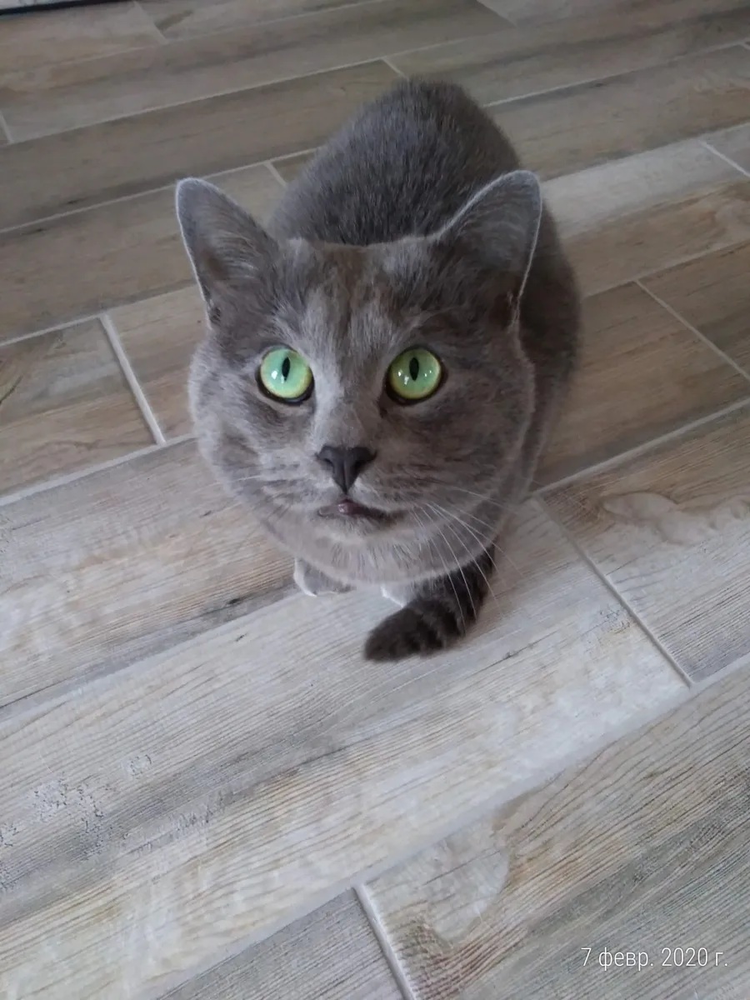

Тимоша встретил Новый год дома
Тимошу когда-то передавали из рук в руки — никому он не был нужен. У нас он с 2016-го. Накануне одного Нового года ему срочно понадобилось лечение. Нужную сумму наши подписчики собрали за один вечер. Тимоша встретил праздник дома, на диване. И, конечно, высказал по этому поводу всё, что думает.